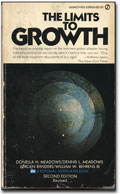
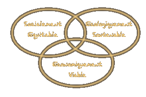

|
 |
|
 |
 |
 |
|
| |
| |
|
Tout d'abord, nous tenons à préciser que de
par la complexité des concepts et problématiques,
la multiplicité des acteurs (gouvernements, entreprises,
ONG, société civile, organisations supra nationales)
et le fait que nous ne nous considérons pas comme des
experts du Développement Durable, nos définitions
et notre traitement de l'information ne seront que partiels
et que si vous désirez plus de précisions sur
les sujets abordés, rendez-vous dans la rubrique liens.
Dans notre approche, nous tenterons d'apporter un regard neuf
et, dans la mesure du possible, neutre sur des problématiques
complexes. |
| |
 |
HISTORIQUE :
Comment est née la notion du Développement
Durable ?
"En 1971, le Club de Rome lance un vrai pavé
dans la marre en publiant Limits to Growth, traduit un peu
rapidement par Halte à la croissance. Face à
la surexploitation des ressources naturelles liée à
la croissance économique et démographique, cette
association privée internationale créée
en 1968, prône la croissance zéro. En
clair, le développement économique est alors
présenté comme incompatible avec la protection
de la planète à long terme.
C'est dans ce climat de confrontation et non de conciliation
entre l'écologie et l'économie que se tient
la Conférence des Nations Unies sur l'Environnement
humain, à Stockholm, en 1972. Conférence
qui sera à l'origine du premier vrai concept de développement
durable, baptisé à l'époque éco-développement.
Des personnalités comme Maurice Strong, organisateur
de la Conférence, puis le professeur René Dubos,
Barbara Ward et Ignacy Sachs, insistent sur la nécessité
d'intégrer l'équité sociale et la prudence
écologique dans les modèles de développement
économique du Nord et du Sud. Il en découlera
la création du Programme des Nations Unies pour
l'Environnement (PNUE) ainsi que le Programme des Nations
Unies pour le Développement (PNUD). |
| |
Gro Harlem Brundtland
|
Siège de l'ONU, New York
|
Mais plus le temps passe, plus la société
civile prend conscience de l'urgence de mettre en place une
solidarité planétaire pour faire face aux grands
bouleversements des équilibres naturels. Ainsi, au
cours des années 1980, le grand public découvre
les pluies acides, le trou dans la couche d'ozone, l'effet
de serre, la déforestation et la catastrophe de Tchernobyl
!
Dès 1980, l'UICN parle pour la première fois
de Sustainable Development (traduit à l'époque
par développement soutenable). Mais le terme passe
presque inaperçu jusqu'à sa reprise dans le
rapport de Gro Harlem Brundtland, Notre Avenir à tous,
publié en 1987. À l'époque Premier ministre
en Norvège et présidente de la Commission Mondiale
sur l'Environnement et le Développement, Madame
Brundtland s'attacha à définir ce concept de
Sustainable Development par "un développement
qui répond au besoin du présent, à commencer
par ceux des plus démunis, sans compromettre la capacité
des générations futures à répondre
aux leurs". Depuis cette date, le concept de développement
durable a connu le succès qu'on lui connaît."
Source : Ministère du Développement Durable |
| |

Triptyque du Développement Durable
(Source : C. Brodhag)
|
DEFINITIONS
Définitions du Développement Durable :
Le développement durable fait donc appel à
un double effort de solidarité :
- Intergénérationnel :
Notre génération doit se préoccuper
du "Capital Terre"
qu'elle laisse aux générations futures
afin de ne
pas hypothéquer leur capacité à
accéder au bien être.
- Intragénérationnel :
Il est urgent de commencer par réduire
les inégalités
entre pauvres et riches (inégalités Nord/Sud
et au sein
même de nos sociétés occidentales).
Le changement qu'implique le développement durable
est, à notre sens, celui qui incite à réévaluer
les critères d'exigence en terme de responsabilité
sociale et environnementale de tous les acteurs du développement
(Entreprises, Gouvernements & Citoyens) par rapport aux
critères économiques.
Le Développement durable est souvent présenté
sous la forme d'un triptyque (Personnes, Planète, Profits)
où l'économique n'est qu'un critère de
performance parmi trois, s'ajoutant à des préoccupations
sociales et environnementales.
Les conditions de mise en place d'un développement
durable telles que les évoquait le rapport de la commission
Brundtland :
" Le développement durable exige :
- Un système politique qui assure la participation
effective des citoyens à la prise de décisions,
- Un système économique capable de dégager
des excédents et de créer des compétences
techniques sur une base soutenue et autonome,
- Un système social capable de trouver des solutions
aux tensions nées d'un développement déséquilibré,
- Un système de production qui respecte l'obligation
de préserver la base écologique en vue du développement,
- Un système technologique toujours à l'affût
de solutions nouvelles,
- Un système international qui favorise des solutions
durables en ce qui concerne les échanges et le financement,
- Un système administratif souple capable de s'auto
corriger.
Ce qui compte, c'est la sincérité avec laquelle
ces objectifs sont recherchés et l'efficacité
avec laquelle les écarts sont corrigés."
Source - Le Rapport de la Commission Mondiale sur l'Environnement
et le Développement, intitulé Notre Avenir à
Tous (Oxford University Press, 1987 et Editions du Fleuve,
Québec, 1988). |
|
|
         |
 |
|